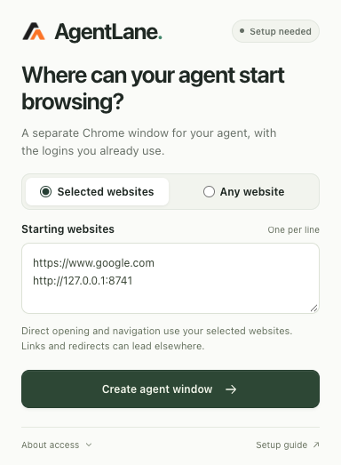
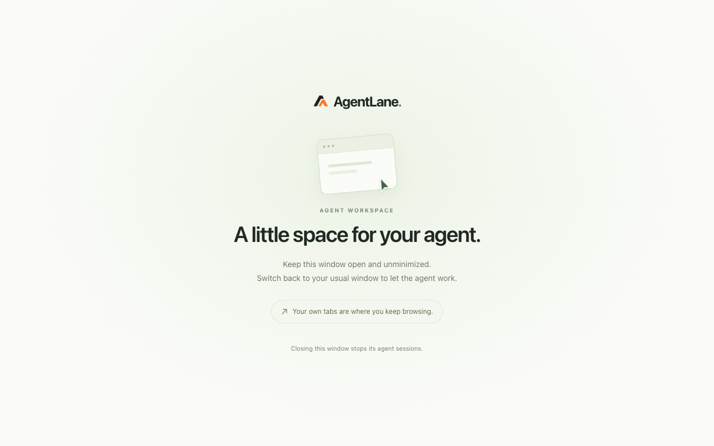

Chrome extension + MCP server
Your agent needs Chrome. So do you.
AgentLane gives your coding agent its own window inside your logged-in Chrome: real screenshots, clicks and typing, separate from your keyboard and pointer. You keep working. The agent keeps working. Neither waits.
Launch notes
Invoices · acme.app
Built for any stdio MCP client
- Codex
- Claude Code
- Cursor
- Windsurf
- GitHub Copilot
- Gemini CLI
- Cline
- Zed
- OpenCode
…and every other client that supports MCP.
The analogy
One road. Two lanes.
Think of your Chrome profile as a road. Your logins, cookies and storage are the asphalt, and both of you drive on it. Without AgentLane, you and the agent share a single lane and take turns. With it, each gets a lane of its own.
- The road
- Your Chrome profile. Authentication and server-side effects are shared, so the agent is already signed in.
- Your lane
- Your window, your keyboard and your pointer. The agent can neither see nor steer them.
- The agent's lane
- A separate window with one tab it owns. It sees screenshots and sends input to that tab only.
- The lane rules
- One action per fresh screenshot, and no stealing focus. These are what keep the cars in their lanes.
Painted lines, not a wall. Lanes are not a security sandbox. Both drive on the same road, so a link, a popup or a native dialog can still cross over, and anything the agent does to your accounts really happens. See what a lane does and doesn't isolate.
How it works
Share the logins. Not the input.
Your physical keyboard and pointer drive your Chrome window. The agent never touches them: it sees pixels and sends tab-targeted input to a tab it owns, in a separate window, inside the same Chrome profile. Select any step to see what it really does.
- One tab per connection. The host assigns each socket a random session ID. There is no tool to list, select or read your tabs.
- Eight fixed tools. No raw CDP, no arbitrary JavaScript, no cookie access, no OS shortcuts.
- Screenshot, then one input. Every click, key or scroll spends a single-use frame token from the latest screenshot.
See it
Screenshot. Token. One action.
The agent works like a careful person with a remote screen: look, then act once, then look again. Try the loop below. It is a small model of the protocol, not the real extension.
Agent visual workspace
Synthetic session: recognized
Start with lane_screenshot. Then click the note field or the Save button in the tab above.
The real thing



Real screenshots from a disposable Chrome profile with a synthetic demo session. They are not a recording of simultaneous use; test results are in the evidence log.
Get started
Six steps to your first lane.
Install the Chrome Web Store extension, then connect its local bridge and MCP server. Keep the source checkout in place; the docs add detail and recovery.
-
1
Get the code and check it
Keep this checkout where it is afterwards: the native launcher and MCP config point at its files.
git clone https://github.com/orkunkinay/AgentLane.git cd AgentLane npm ci npm test -
2
Install AgentLane from the Chrome Web Store
In your usual signed-in Chrome profile, open the AgentLane listing, click Add to Chrome and review the permission prompt. Pin AgentLane through the puzzle-piece menu. Developer mode is not needed.
Already installed? Remove from Chrome on the listing confirms it. For development, the docs explain Load unpacked.
Chrome grants the extension broad debugger access, even though AgentLane exposes a narrow toolset. Review it before using a real profile.
-
3
Register the local browser bridge
node scripts/install-host.mjs mpiigaljakpfmmihkahppdaaccmpgmmkRegisters a Chrome native messaging host using an owner-only Unix socket. No debugging TCP port, no exported cookies. The installer refuses to overwrite existing files. Switching from an unpacked copy? Repair its old extension ID first; deleting the extension does not update the bridge.
-
4
Create the agent window
Click AgentLane in Chrome's toolbar (or the puzzle-piece menu). Under Where can your agent start browsing? keep Selected websites and list at least one HTTP(S) address, or choose Any website. Click Create agent window.
A second window titled AgentLane workspace appears. Leave it open, restored and unfocused, then switch back to your own window. Wait for Connected in the popup.
-
5
Connect your agent
From the checkout root. These record absolute paths, so they do not depend on your PATH later.
AGENTLANE_NODE="$(node -p 'process.execPath')" AGENTLANE_PROJECT="$(pwd)" codex mcp add agentlane -- "$AGENTLANE_NODE" "$AGENTLANE_PROJECT/src/mcp.js" codex mcp get agentlaneThe last command should show an enabled stdio server named
agentlanepointing atsrc/mcp.js. Install the bundled skill too:node scripts/install-skill.mjsSame stdio server, registered with Claude Code. Verified with Claude Code 2.1.326:
claude mcp getreports Connected, all eight tools are discovered, andlane_open→lane_screenshot→lane_closeran against a real lane.AGENTLANE_NODE="$(node -p 'process.execPath')" AGENTLANE_PROJECT="$(pwd)" claude mcp add agentlane -- "$AGENTLANE_NODE" "$AGENTLANE_PROJECT/src/mcp.js"Install the bundled skill too (Claude Code loads it as
/agentlane-browser):node scripts/install-skill.mjs --target claudeFor clients configured with an
mcpServersJSON object. Use absolute paths (node -p 'process.execPath'prints yours).{ "mcpServers": { "agentlane": { "command": "/absolute/path/to/node", "args": ["/absolute/path/to/AgentLane/src/mcp.js"] } } }For clients configured with TOML, such as Codex's
config.toml.[mcp_servers.agentlane] command = "/absolute/path/to/node" args = ["/absolute/path/to/AgentLane/src/mcp.js"]Start a fresh conversation afterwards so the agent discovers the
lane_*tools. If it cannot see them, that conversation does not have AgentLane enabled; do not let it fall back to desktop control. -
6
Try it, and keep working
Paste this into the fresh conversation, then carry on in your own Chrome window.
Use the agentlane-browser skill. Open https://www.google.com and search for “Chrome DevTools Protocol”. Use AgentLane lane tools and screenshots only. Show me the result, then close your owned tab.If anything steals your focus or switches Spaces, that is a failed isolation test: stop the workflow and tell us. Stuck? See troubleshooting.
Straight answers
What a lane does and doesn't isolate.
AgentLane is experimental. Here is the ledger, taken from the evidence log and security model, not from marketing.
Measured and working
- Separate input: no OS input injection, so the agent cannot take your keyboard or pointer.
- Your existing logins: the agent's tab uses the same Chrome profile. No profile copy, no cookie export.
- One run on normal Chrome 157: a visual workflow, an existing Google sign-in check, and 138 rounds / 2,208 tool calls in 120.7 s, with the human actively using Chrome and reporting no interference.
- Standard HTML select dropdowns render in-page, so they stay visible in screenshots (Chrome 134+).
- Recovery in the same conversation after the lane window or browser bridge is lost; interrupted input is never replayed.
Not isolated. Do not rely on it
- Native dialogs, permission sheets, passkeys, file pickers and popups can still grab focus.
- Individual macOS Space transitions and occluded windows are not certified.
- Cookies, storage and server-side account state are shared. Agent actions are real actions in your accounts.
- Links, redirects and iframes can leave your “Selected websites” list; it governs direct opening and navigation only.
- Screenshots and typed text go to your model provider. They can contain private data.
- macOS and Chrome only; Windows unsupported; Linux and other browsers unverified.
Read the full evidence log, security model and the known limitations before using sensitive workflows.